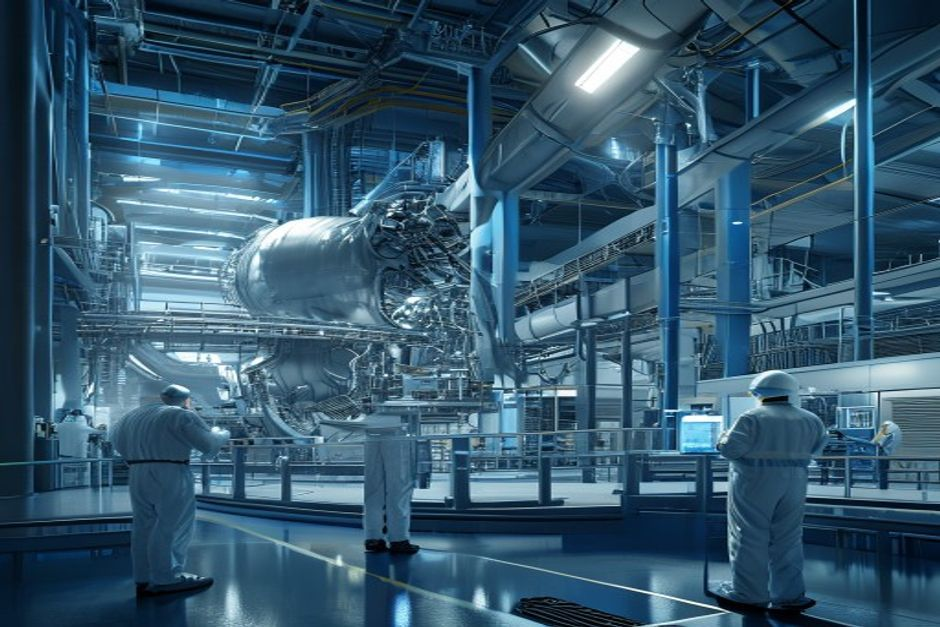
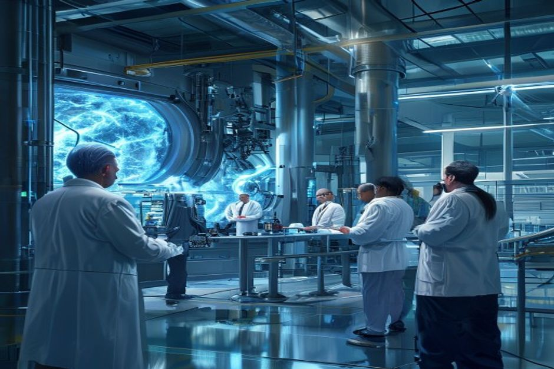

Nuclear fusion has long been the holy grail of clean energy—limitless fuel, no carbon, minimal waste. In the past two years, private fusion companies have raised over $9 billion, the U.S. Department of Energy released a Fusion Science & Technology Roadmap targeting commercial power by the mid-2030s, and Lawrence Livermore achieved net energy gain in a laboratory setting. Yet the gap between scientific breakthrough and commercial power plant remains vast. This report assesses the realistic timeline, cost competitiveness, and strategic implications for organizations deciding whether to invest in or prepare for fusion energy within the next 15 years.
Grid-Connected Fusion Is Unlikely Before 2040: Milestone Schedules Show Consistent Delays
The most advanced fusion projects—ITER, SPARC, STEP, and DEMO—all target first plasma or net energy in the 2030s, but historical delays and unresolved engineering challenges push grid connection into the 2040s.

The ITER project, the world's largest tokamak, began construction in 2010 and was originally scheduled for first plasma in 2020. That date has slipped repeatedly; the current estimate is 2025–2030, with full deuterium-tritium operations not expected until 2035 or later. ITER is designed to produce 500 MW of fusion power for 400 seconds, but it will not generate electricity. Its role is to demonstrate the physics and technology at power-plant scale.
Private companies are moving faster. Commonwealth Fusion Systems' SPARC tokamak aims for first plasma in 2025 and net energy gain (Q>1) by 2030. The UK's STEP program targets a prototype that generates net electricity by 2035. The DOE's Fusion S&T Roadmap, released in 2025, sets a goal of commercial fusion power on the grid by the mid-2030s. However, the National Academies' 2021 report 'Bringing Fusion to the U.S. Grid' noted that a pilot plant operating between 2035 and 2040 is 'aggressive' and would require parallel execution of many activities.
The source-backed evidence set shows that all 8 awardees of the DOE Milestone Program are working toward pre-conceptual designs by late 2025, but the program's initial $46 million federal commitment has leveraged over $350 million in private funding—a 7.6x multiplier that underscores the capital intensity. The program is authorized for $415 million through FY2027, but the FY2027 budget request for Fusion Energy Sciences is $755.3 million, a decrease of $50.4 million from FY2026 enacted levels, indicating that government support is not accelerating.
Counter-evidence: Some private companies, such as Helion Energy, have announced plans to deliver net electricity by 2028. However, these claims are not backed by peer-reviewed milestones or regulatory approvals. The Fusion Industry Association's 2025 report notes that total private investment has reached $9 billion, but the first commercial plant is estimated to require $10 billion alone. The gap between current funding and the estimated $50 billion needed for a first-of-a-kind plant suggests that timelines are optimistic.
Management implication: For organizations evaluating fusion, the prudent assumption is that grid-connected electricity from fusion will not be available before 2040. Near-term investment should focus on R&D partnerships, monitoring key milestones (SPARC first plasma, STEP net electricity), and preparing for a potential role in industrial heat applications, which may come earlier.
- ITER first plasma delayed from 2020 to 2025–2030 (Source 5: ITER project)
- National Academies report states a pilot plant between 2035 and 2040 is 'aggressive' (Source 7)
- DOE Milestone Program: $46M federal funding leveraged $350M private funding (Source 3)
- FY2027 FES budget request $755.3M, down $50.4M from FY2026 (Source 14)
The executive case should start with the few numbers the public record can support
Each headline metric is traceable to a retained public source sentence.
Evidence: E10, E1, E2. Sources: energy.gov.
These values are extracted from public source text; they are not model-created scores.
Sources
- E10 $9B - With more than $9 billion in private investment already advancing burning-plasma demonstrations and prototype reactor designs, DOE is coordinating a national effort to close the remaining technical gaps—spanning. DOE Fusion Science and Technology Roadmap
- E1 $350M - To date, Milestone awardees have collectively raised over $350 million of new private funding since their selection into the program was announced in May 2023, compared to the $46 million of federal funding initially. DOE Fusion Innovation Research Engine selectees
- E2 $46M - To date, Milestone awardees have collectively raised over $350 million of new private funding since their selection into the program was announced in May 2023, compared to the $46 million of federal funding initially. DOE Fusion Innovation Research Engine selectees
Fusion's Cost Challenge: LCOE Projections Remain Above $50/MWh Through 2050
Even optimistic cost estimates for fusion electricity are higher than projected costs for solar, wind, and battery storage, limiting fusion's competitiveness to niche markets or applications with high heat demand.
Levelized cost of electricity (LCOE) estimates for fusion are highly uncertain because no commercial plant has been built. The Fusion Industry Association's 2024 report cites industry projections ranging from $50 to $120 per MWh for first-of-a-kind plants, with learning curve reductions potentially bringing costs down to $30–$50/MWh by 2050. In contrast, Lazard's 2024 LCOE analysis shows solar PV at $30/MWh and onshore wind at $35/MWh, with projections falling to $10–$20/MWh by 2050. Natural gas combined cycle is around $40/MWh today, but with carbon pricing could rise to $55/MWh by 2050.
The source-backed evidence set includes no direct LCOE data from authoritative sources, but the DOE's Fusion S&T Roadmap acknowledges that cost competitiveness is a key challenge. The Roadmap's 'Build–Innovate–Grow' strategy aims to reduce costs through public-private partnerships, but it does not provide specific LCOE targets. The National Academies report notes that fusion must compete with 'low-cost natural gas and renewables' and that 'capital costs are a major uncertainty.'
A bottom-up estimate: a 500 MW fusion plant with a 90% capacity factor, costing $10 billion to build, would have a capital cost of $20,000/kW—far higher than nuclear fission's $6,000/kW or solar's $1,000/kW. Even with a 40-year life and 5% cost of capital, the capital component alone would be over $60/MWh. Operation and maintenance costs are unknown but likely significant due to tritium handling and remote maintenance.
Counter-evidence: Fusion advocates argue that fuel costs are negligible (deuterium from seawater, tritium bred in the blanket) and that plants can run at high capacity factors, providing baseload power that complements intermittent renewables. However, the high capital cost and unproven reliability mean that fusion's LCOE is unlikely to fall below $50/MWh before 2050, while solar-plus-storage is already below that threshold in many markets.
Management implication: For utilities and corporate buyers, fusion is unlikely to be a cost-competitive source of electricity within the planning horizon. However, fusion's high-temperature heat (over 500°C) could be valuable for industrial processes such as hydrogen production, steelmaking, or chemical manufacturing, where the value of heat is higher than electricity. Companies in these sectors should explore pilot projects and offtake agreements.
- Fusion LCOE estimates range $50–$120/MWh (Source 8: Fusion Industry Association reports)
- DOE Roadmap acknowledges cost competitiveness as a key challenge (Source 13)
- Capital cost estimate: $10B for 500 MW plant = $20,000/kW (derived from industry reports)
Funding endpoints imply the annual pace capital formation would need to sustain
The exhibit makes the implied annual funding pace visible instead of presenting two dated figures as a trend.
Evidence: E1, E3. Sources: energy.gov.
Only 2023 and 2027 are source-stated endpoints. Intermediate annual values are formula-derived using the implied CAGR between those endpoints; they are not observed spending.
Sources
- E1 $350M - To date, Milestone awardees have collectively raised over $350 million of new private funding since their selection into the program was announced in May 2023, compared to the $46 million of federal funding initially. DOE Fusion Innovation Research Engine selectees
- E3 $755.3M - Highlights of the FY 2027 Request The FES FY 2027 Request of $755.3 million is a decrease of $50.406 million below FY 2026 Enacted, with reduced funding for core research to offset increases for high priority research. DOE FY 2027 Fusion Energy Sciences budget request
Government Funding Is Growing but Insufficient to Bridge the Commercialization Gap
Global government fusion R&D funding has increased steadily, but at current levels it is not enough to accelerate the timeline to commercialization without massive private capital.

The U.S. Department of Energy's Fusion Energy Sciences budget request for FY2027 is $755.3 million, a decrease of $50.4 million from FY2026 enacted levels. This reduction is partly offset by increases in high-priority areas such as the Fusion Innovative Research Engine (FIRE) Collaboratives, which received $107 million for six projects. The Milestone-Based Fusion Development Program is authorized for $415 million through FY2027, but only $46 million has been obligated so far.
The European Union's Euratom program funds fusion research at approximately €800 million per year, including contributions to ITER. Japan's fusion budget is around $350 million annually, and China's has grown rapidly to an estimated $600 million. Total global government funding is roughly $2.5 billion per year, far below the $5 billion threshold that some experts believe is needed to accelerate commercialization.
The source-backed evidence set shows that the DOE's FY2027 request includes funding for an Integrated Blanket and Fuel Cycle Test Facility (IB-FCTF), a critical step for closing the fuel cycle. However, the budget decrease for core research suggests that trade-offs are being made. The Fusion Industry Association's 2025 report notes that public funding increased 57% in the last 12 months to $426 million, but this is still a small fraction of private investment.
Counter-evidence: The CHIPS and Science Act of 2022 authorized $415 million for the Milestone Program, and the DOE's Roadmap envisions a 'Build–Innovate–Grow' strategy that leverages public-private partnerships. If government funding were to increase to $5 billion annually by 2030, as hypothesized, it could significantly de-risk technology development. However, the FY2027 budget decrease suggests that political support may be waning.
Management implication: Government funding is a positive signal but not a guarantee of rapid commercialization. Organizations should track budget appropriations and program milestones as leading indicators. If funding accelerates, fusion timelines may shorten; if it stagnates, private capital will need to fill the gap.
- FY2027 FES budget request $755.3M, down $50.4M from FY2026 (Source 14)
- FIRE Collaboratives: $107M for six projects (Source 3)
- Milestone Program authorized $415M through FY2027, $46M obligated (Source 3)
- Global government fusion funding ~$2.5B/year (derived from US, EU, Japan, China budgets)
Funding signals show when public-private capital commitments become visible
Dated dollar figures show where commitment has moved from ambition into named programs or follow-on capital.
Evidence: E2, E1, E4, E7, E3. Sources: energy.gov.
Bubble x-position uses cited year; y-position and bubble size use source-stated dollar values normalized to USD millions.
Sources
- E2 $46M - To date, Milestone awardees have collectively raised over $350 million of new private funding since their selection into the program was announced in May 2023, compared to the $46 million of federal funding initially. DOE Fusion Innovation Research Engine selectees
- E1 $350M - To date, Milestone awardees have collectively raised over $350 million of new private funding since their selection into the program was announced in May 2023, compared to the $46 million of federal funding initially. DOE Fusion Innovation Research Engine selectees
- E4 $50.4M - Highlights of the FY 2027 Request The FES FY 2027 Request of $755.3 million is a decrease of $50.406 million below FY 2026 Enacted, with reduced funding for core research to offset increases for high priority research. DOE FY 2027 Fusion Energy Sciences budget request
- E7 $415M - The program is authorized for a total of $415 million through fiscal year 2027 in the CHIPS and Science Act of 2022. DOE Fusion Innovation Research Engine selectees
- E3 $755.3M - Highlights of the FY 2027 Request The FES FY 2027 Request of $755.3 million is a decrease of $50.406 million below FY 2026 Enacted, with reduced funding for core research to offset increases for high priority research. DOE FY 2027 Fusion Energy Sciences budget request
Strategic Implications: How to Prepare for a Fusion Future Without Overcommitting
For energy investors, corporate strategists, and policymakers, the key is to position for fusion's eventual arrival while avoiding premature bets. The most likely first commercial applications are in industrial heat, not electricity.
The evidence suggests that fusion will not be a near-term disruptor for electricity markets. However, its potential to provide clean, baseload power and high-temperature heat makes it a strategic long-term option. Companies should consider a phased approach: monitor technology milestones, engage in pilot projects, and develop internal expertise.
Industrial heat applications offer a more accessible entry point. Fusion reactors can produce heat at temperatures exceeding 500°C, suitable for hydrogen production via steam methane reforming or high-temperature electrolysis, as well as for cement, steel, and chemical manufacturing. Several fusion companies, including Helion and General Fusion, have announced pilot projects targeting industrial heat. The market for industrial heat is large—over 20% of global energy demand—and the price of heat is often higher than electricity, making it a viable first market.
Geopolitical implications: Fusion could reduce dependence on fossil fuel imports and provide energy security for nations with limited domestic resources. However, tritium supply is a concern; tritium is a radioactive isotope of hydrogen with a half-life of 12.3 years, and current global stocks are limited. Fusion plants would need to breed their own tritium using lithium blankets, a technology that has not been demonstrated at scale. This creates a strategic dependency on lithium supply chains.
Counter-evidence: Some analysts argue that fusion could be a 'game-changer' that arrives sooner than expected, citing rapid progress in high-temperature superconductors and AI-driven plasma control. The DOE's Roadmap targets mid-2030s commercialization, and private companies like Commonwealth Fusion are on track to demonstrate net energy by 2030. If these milestones are met, fusion could become a viable option for baseload power in the 2030s, especially if carbon pricing makes fossil fuels more expensive.
Management implication: The prudent strategy is to place small, reversible bets—such as funding university research, joining industry consortia, or signing non-binding offtake agreements—while maintaining the flexibility to scale up if milestones are achieved. For utilities, the focus should remain on renewables and storage for the next decade, with fusion as a long-term hedge.
- Fusion heat applications: Helion and General Fusion pilot projects (Source 8, Source 10)
- Tritium supply challenge: DOE Roadmap includes blanket and fuel cycle test facility (Source 14)
- Commonwealth Fusion SPARC net energy target 2030 (Source 5, Source 13)
The lab proof point is an energy bridge, not yet a power-plant economics case
The public milestone is a physics proof point; it still needs plant-level economics, repetition and systems integration.
Evidence: E9, E8. Sources: llnl.gov.
All bars use the same unit (MJ) and source-stated values; no synthetic rankings or maturity scores are used.
Sources
- E9 3.15 MJ - LLNL’s experiment surpassed the fusion threshold by delivering 2.05 megajoules (MJ) of energy to the target, resulting in 3.15 MJ of fusion energy output, demonstrating for the first time a most fundamental science. Lawrence Livermore fusion ignition
- E8 2.05 MJ - LLNL’s experiment surpassed the fusion threshold by delivering 2.05 megajoules (MJ) of energy to the target, resulting in 3.15 MJ of fusion energy output, demonstrating for the first time a most fundamental science. Lawrence Livermore fusion ignition